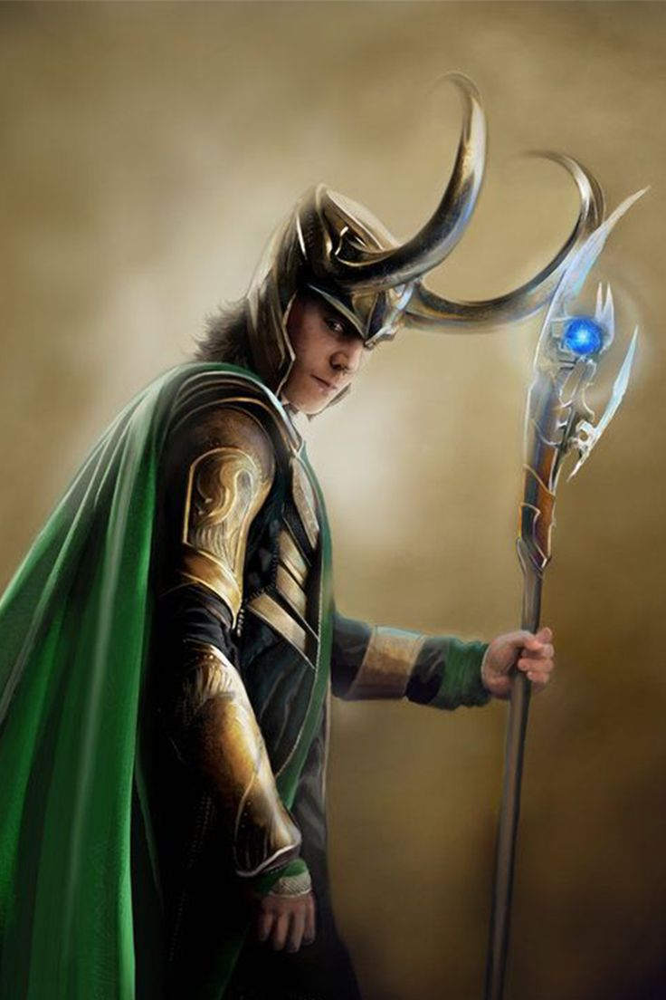

LOKI
Loki is the adopted brother and often antagonist of Thor. He was taken in by Odin, the All-Father of Asgard, after being found as an abandoned frost giant child. Despite being raised alongside Thor, Loki always felt like an outsider, fostering feelings of jealousy and a desire for power. Known for his cunning, deceit, and mastery of magic, Loki often uses trickery and manipulation to achieve his goals, which frequently puts him at odds with Thor and the other heroes of Asgard.
Loki's storylines delve into themes of identity, redemption, and the struggle between his nature as a trickster and his occasional desire to be seen as a hero. His character evolves from a villain seeking to conquer Asgard and Earth to a more nuanced anti-hero who sometimes aids the very people he once sought to destroy.